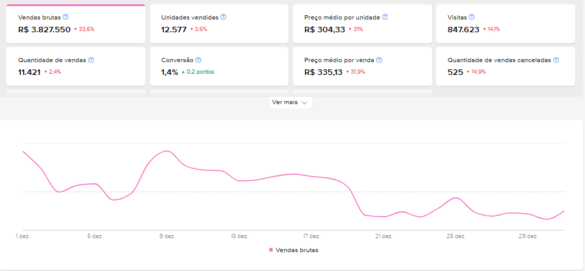

Selecionar Base de Métricas
Altere a conta base para mudar o desafio a ser analisado.
1
Métricas da Conta Mercado Livre
🔍 Ampliar Visão Geral

🔍 Ampliar Heatmap

🔍 Ampliar Retenção

🔍 Ampliar Conversão

2
Parâmetros do Seller
Parâmetros Incompletos. Selecione Nicho e Hipótese.